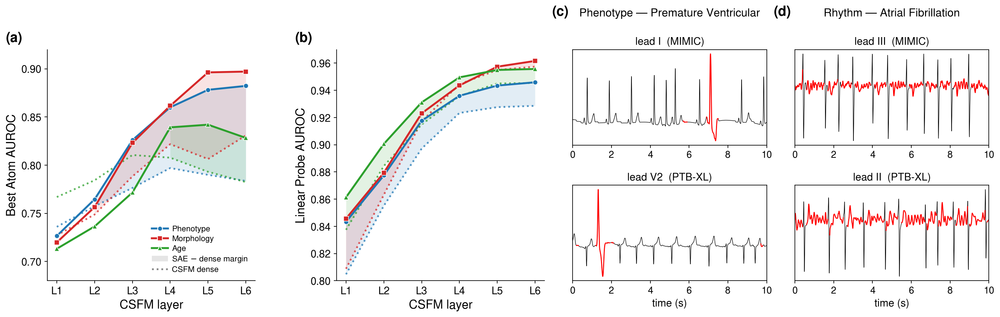
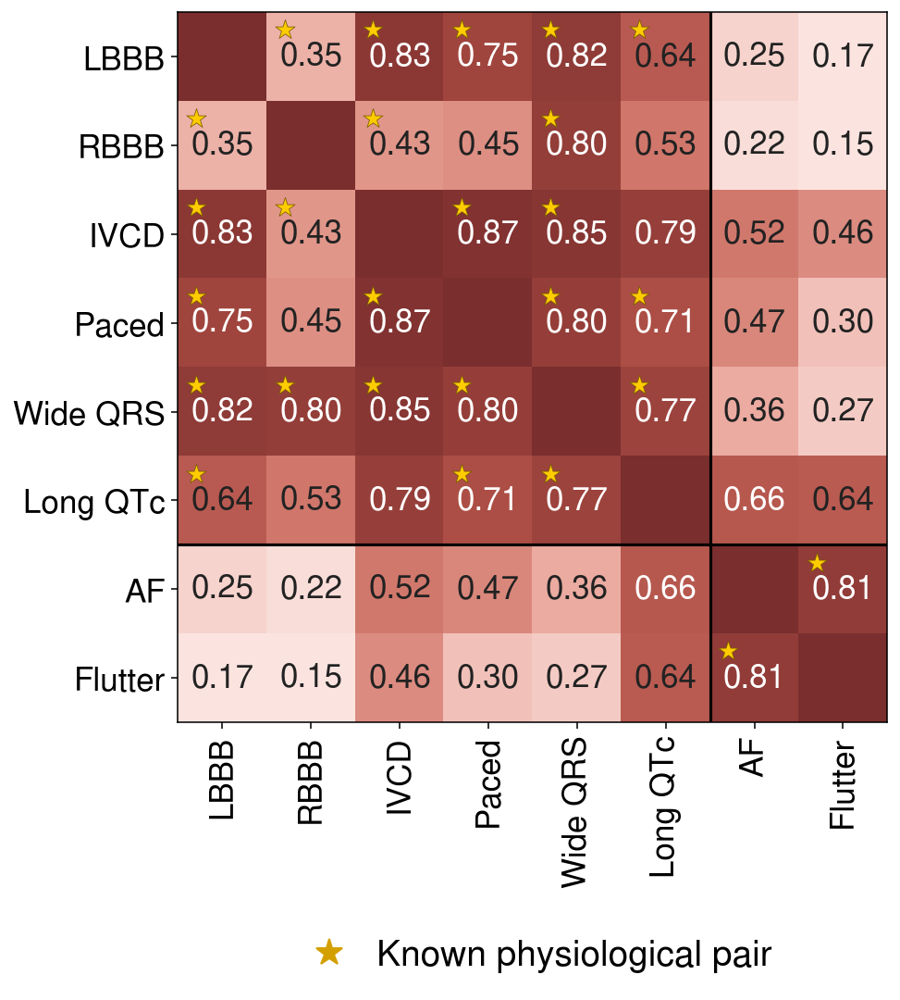
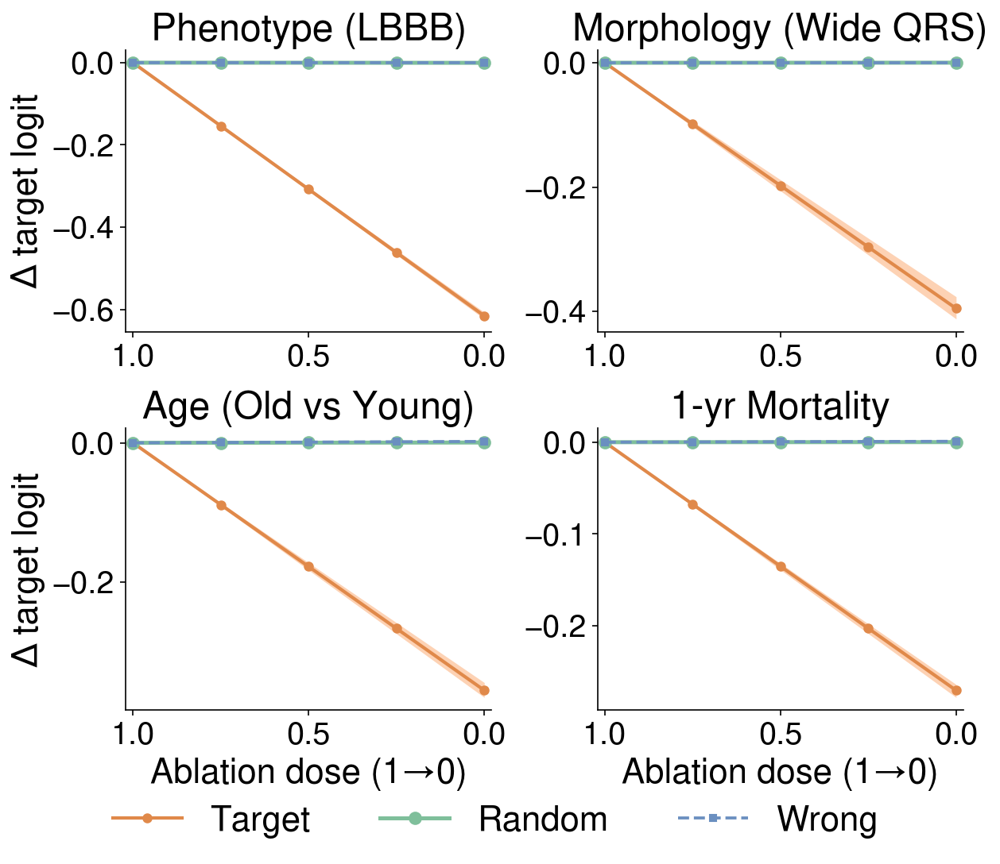
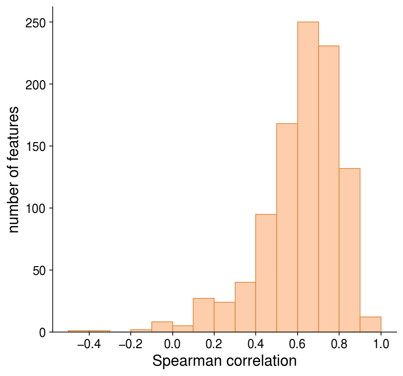
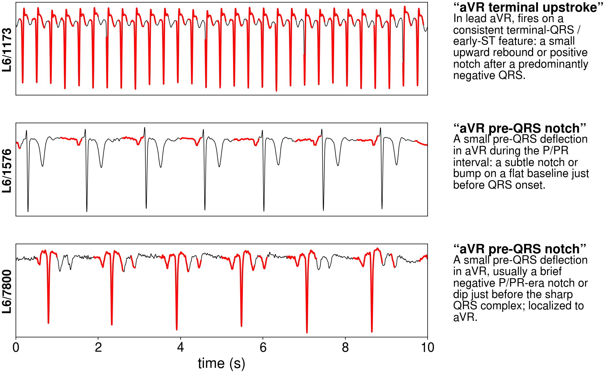

Accepted by KDD 2027 AI4S Track
CADENCE: A Cardiac Atom Dictionary
for Interpretable Neural Concept Extraction from ECG Foundation Models
1Rice University 2Houston Methodist Hospital 3Weill Cornell Medicine
*Corresponding author

for Interpretable Neural Concept Extraction from ECG Foundation Models
Foundation models for 12-lead electrocardiograms (ECGs) demonstrate strong transferability across clinical tasks, yet the physiological knowledge encoded in their representations remains opaque, limiting their interpretability, auditability, and scientific utility. We present CADENCE (Cardiac Atom Dictionary for Explainable Neural Concept Extraction), a framework that decomposes the latent representations of an ECG foundation model into a human-interpretable and queryable dictionary of physiological concepts. Using a BatchTopK sparse autoencoder, CADENCE factorizes Layer-6 embeddings extracted from more than nine million ECG tokens into 8,192 sparse cardiac atoms. Compared with individual dimensions of the original dense embedding space, the learned atoms align substantially better with both clinical phenotypes and waveform morphology. CADENCE recovers a broad spectrum of cardiological concepts, including arrhythmias, conduction abnormalities, infarction and repolarization patterns, chamber and electrical-axis findings, and lead- and beat-phase-specific waveform primitives.
At Layer 6, the best-performing atoms achieve mean AUROCs of 0.88 for clinical phenotypes and 0.90 for waveform morphology, compared with 0.78 and 0.83, respectively, for the best dense embedding dimensions. Sparse atom-based probes match or outperform dense embedding probes for phenotype, morphology, and age prediction while attributing each prediction to a small set of interpretable atoms. For phenotype prediction, the test AUROC improves from 0.93 in the dense embedding space to 0.95 in the sparse atom space. Moreover, atom-space geometry recovers physiologically coherent relationships, while targeted ablation of phenotype-associated atoms produces selective changes in frozen downstream model outputs. An automated large language model pipeline generates atom descriptions and quantitatively validates their descriptions by predicting held-out atom activations. Across independent external ECG datasets, CADENCE recovers overlapping physiological concepts and maintains consistent phenotype-prediction performance. Together, these findings establish CADENCE as a scalable framework for discovering and auditing the physiological knowledge encoded by ECG foundation models, providing a transparent foundation for scientific analysis and trustworthy clinical AI.
Self-supervised ECG foundation models transfer to arrhythmia detection, risk prediction and screening from a single frozen backbone. A practitioner can see that such a model predicts left bundle branch block, but not which physiological evidence the prediction rests on.
A network packs more features than it has dimensions into superposition, so each embedding dimension responds to several unrelated features.
Saliency shows where one prediction looks, not which reusable concepts the model holds; probing needs a label for every concept and cannot find unnamed ones.
Sparse autoencoders have exposed interpretable features in language, protein, single-cell and pathology models, but not yet in physiological time-series models.
An ECG feature has a lead (where) and a beat phase (when), so atoms can be checked directly on the waveform.
150k ECGs for the SAE, ~15k held out for all analyses.
21,799 cardiologist-labeled ECGs; frozen SAEs, no retraining.
BatchTopK, k = 128, one SAE per layer.
Rhythm, phenotype and sub-beat morphology.
Concepts become more decodable with depth: best-atom AUROC rises from Layer 1 to Layer 6 for phenotype (0.73 → 0.88), morphology (0.72 → 0.90) and age (0.71 → 0.83). For phenotype and morphology the best atom beats the best dense dimension at every layer. Sparse atom probes match or exceed dense-embedding probes at every layer, with the largest gain in shallow layers (phenotype 0.843 vs. 0.805 at Layer 1).

A sinus-bradycardia atom (AUROC 0.98) fires on the long baseline between beats and stays silent on the QRS–T complexes.
A PVC atom (AUROC 0.90) fires on one premature, wide QRS and its pause, and the same holds on PTB-XL.
Atoms pick out one segment of every beat in one lead, such as a prolonged PR segment or an ST-segment primitive.
Atoms trained on MIMIC fire on the same waveform events in PTB-XL, a cohort from another country and acquisition system.
Cosine similarity of concept fingerprints in atom space groups LBBB, RBBB, IVCD, paced rhythm and wide QRS together (0.80–0.87), with prolonged QTc next to them, since a wider QRS lengthens the QT. LBBB and RBBB are the least similar pair in this group (0.35), in line with their opposite ventricular activation. Atrial fibrillation and flutter form a separate group (0.81). The same structure appears on PTB-XL.

For four targets, a linear predictor is trained on the frozen CSFM Layer-6 embedding, which never sees the SAE. Scaling the single most-attributed atom from full to zero lowers the target logit by 0.62 (LBBB), 0.40 (wide QRS), 0.36 (age) and 0.27 (one-year mortality). A frequency-matched random atom and an atom for a different concept leave the logit unchanged.


For 1,000 random atoms out of the 2,991 interpretable ones, an LLM writes a description from activation evidence alone, with no report text. From that description alone it then predicts activations on held-out ECGs. Predicted and measured activations reach a median Spearman ρ of 0.65; 92% of atoms exceed 0.3 and 2% fail (ρ ≤ 0).


The frozen MIMIC-trained SAEs are applied to PTB-XL without retraining. On the five cardiologist-adjudicated diagnostic superclasses, the mean best-atom AUROC is 0.825 vs. 0.720 for the best dense dimension. Atoms also lead in all five families of 49 automated measurement concepts, about 40 of which were never evaluated during development.
@inproceedings{duan2027cadence,
title = {CADENCE: A Cardiac Atom Dictionary for Interpretable Neural
Concept Extraction from ECG Foundation Models},
author = {Duan, Yixuan and Naik, Arjun and Al-Kindi, Sadeer and Qiu, Wei},
booktitle = {Proceedings of the 33rd ACM SIGKDD Conference on
Knowledge Discovery and Data Mining (KDD '27)},
year = {2027}
}